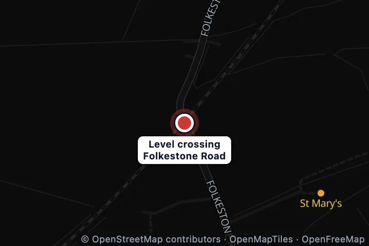

railcrossing.uk doesn't show live barrier times for this crossing yet. Requests help decide which crossings go live next.
Request live times for this crossing
railcrossing.uk predicts when level crossing barriers will go down and come back up, for every train, including freight. It's free and works on any phone. It's live at Portslade Level Crossing now.